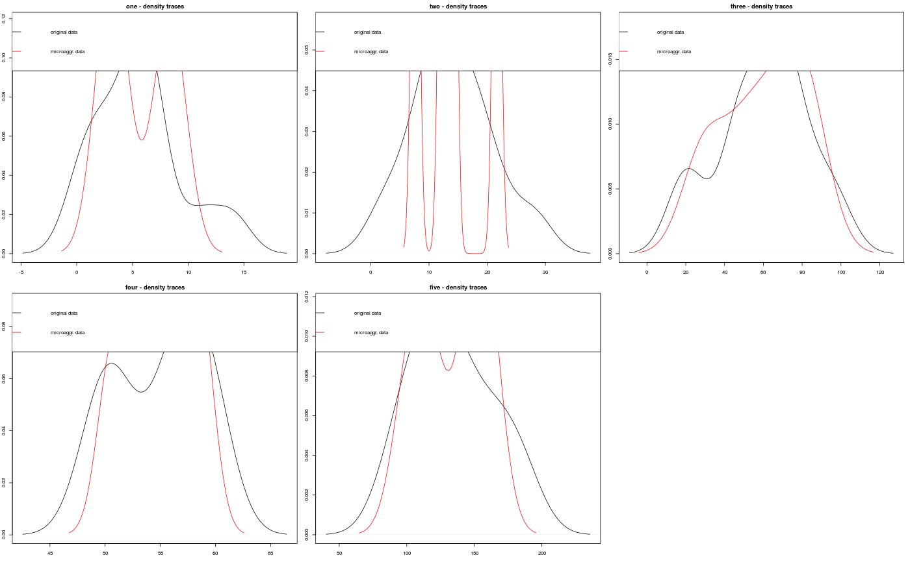
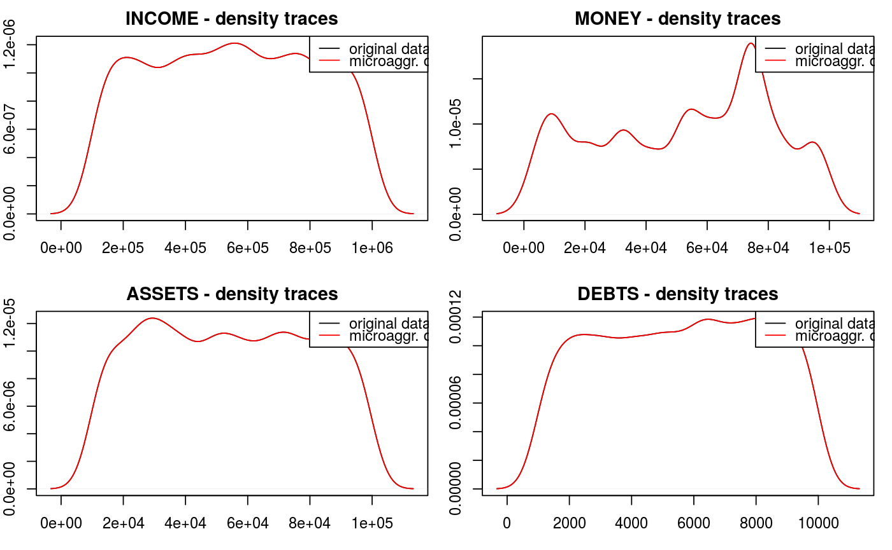
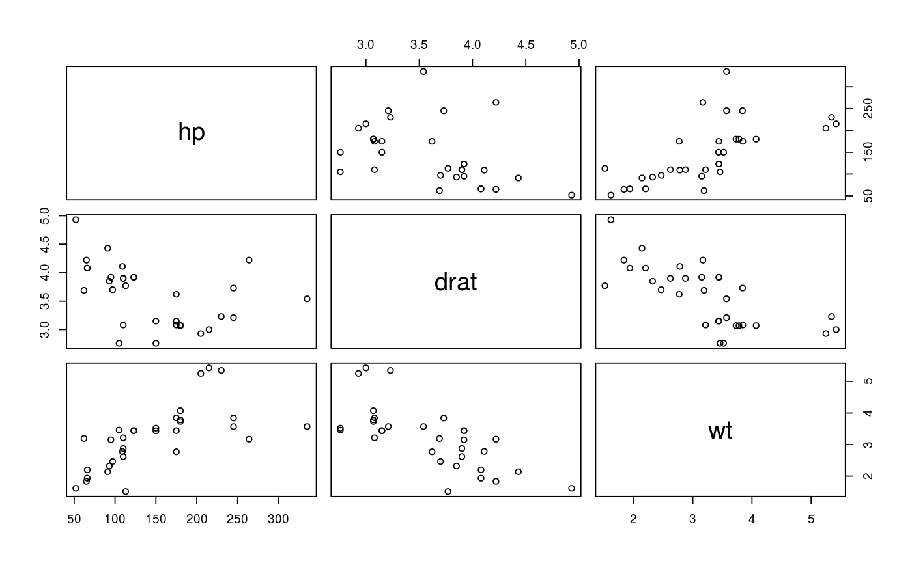
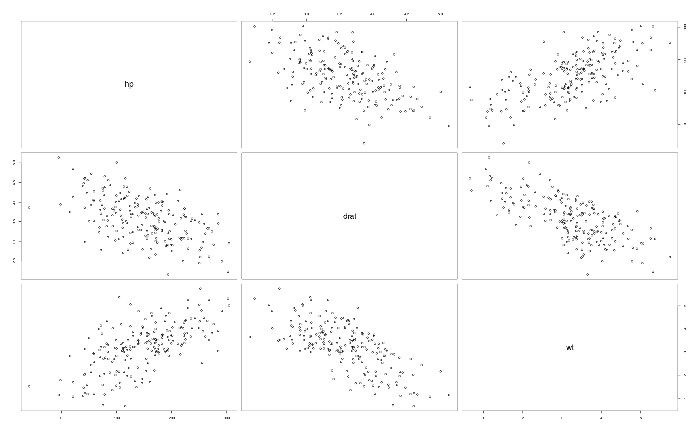

R/sdcMicro-package.R
This package includes all methods of the popular software mu-Argus plus several new methods. In comparison with mu-Argus the advantages of this package are that the results are fully reproducible even with the included GUI, that the package can be used in batch-mode from other software, that the functions can be used in a very flexible way, that everybody could look at the source code and that there are no time-consuming meta-data management is necessary. However, the user should have a detailed knowledge about SDC when applying the methods on data.
The package is programmed using S4-classes and it comes with a well-defined class structure.
The implemented graphical user interface (GUI) for microdata protection serves as an easy-to-handle tool for users who want to use the sdcMicro package for statistical disclosure control but are not used to the native R command line interface. In addition to that, interactions between objects which results from the anonymization process are provided within the GUI. This allows an automated recalculation and displaying information of the frequency counts, individual risk, information loss and data utility after each anonymization step. In addition to that, the code for every anonymization step carried out within the GUI is saved in a script which can then be easily modified and reloaded.
| Package: | sdcMicro |
| Type: | Package |
| Version: | 2.5.9 |
| Date: | 2009-07-22 |
| License: | GPL 2.0 |
Templ, M. Statistical Disclosure Control for Microdata: Methods and Applications in R. Springer International Publishing, 287 pages, 2017. ISBN 978-3-319-50272-4. doi: 10.1007/978-3-319-50272-4
Templ, M. and Kowarik, A. and Meindl, B. Statistical Disclosure Control for Micro-Data Using the R Package sdcMicro. Journal of Statistical Software, 67 (4), 1--36, 2015. doi: 10.18637/jss.v067.i04
Templ, M. and Meindl, B. Practical Applications in Statistical Disclosure Control Using R, Privacy and Anonymity in Information Management Systems, Bookchapter, Springer London, pp. 31-62, 2010. doi: 10.1007/978-1-84996-238-4_3
Kowarik, A. and Templ, M. and Meindl, B. and Fonteneau, F. and Prantner, B.: Testing of IHSN Cpp Code and Inclusion of New Methods into sdcMicro, in: Lecture Notes in Computer Science, J. Domingo-Ferrer, I. Tinnirello (editors.); Springer, Berlin, 2012, ISBN: 978-3-642-33626-3, pp. 63-77. doi: 10.1007/978-3-642-33627-0_6
Templ, M. Statistical Disclosure Control for Microdata Using the R-Package sdcMicro, Transactions on Data Privacy, vol. 1, number 2, pp. 67-85, 2008. http://www.tdp.cat/issues/abs.a004a08.php
Templ, M. New Developments in Statistical Disclosure Control and Imputation: Robust Statistics Applied to Official Statistics, Suedwestdeutscher Verlag fuer Hochschulschriften, 2009, ISBN: 3838108280, 264 pages.
## example from Capobianchi, Polettini and Lucarelli: data(francdat) f <- freqCalc(francdat, keyVars=c(2,4,5,6),w=8) f#> #> -------------------------- #> 4 obs. violate 2-anonymity #> 8 obs. violate 3-anonymity #> --------------------------f$fk#> [1] 2 2 2 1 1 1 1 2f$Fk#> [1] 110.0 84.5 84.5 17.0 541.0 8.0 5.0 110.0## with missings: x <- francdat x[3,5] <- NA x[4,2] <- x[4,4] <- NA x[5,6] <- NA x[6,2] <- NA f2 <- freqCalc(x, keyVars=c(2,4,5,6),w=8) f2$Fk#> [1] 149.0 84.5 194.5 563.0 566.0 549.0 22.0 149.0#> [1] 0.01714426 0.02204233 0.02204233 0.17707583 0.01165448 0.29706308 0.40235948 #> [8] 0.01714426#> 2 observations has individual risks >= 0.25 and were suppressed!#> [1] 0.01714426 0.02204233 0.02204233 0.17707583 0.01165448 0.29706308 0.40235948 #> [8] 0.01714426## select another keyVar and run localSupp once again, #if you think the table is not fully protected data(free1) free1 <- as.data.frame(free1) f <- freqCalc(free1, keyVars=1:3, w=30) ind <- indivRisk(f) ## and now you can use the interactive plot for individual risk objects: ## plot(ind) ## example from Capobianchi, Polettini and Lucarelli: data(francdat) l1 <- localSuppression(francdat, keyVars=c(2,4,5,6), importance=c(1,3,2,4)) l1#> #> ----------------------- #> Total number of suppressions in the key variables: 5 (new: 5) #> #> Number of suppressions by key variables: #> (in parenthesis, the total number suppressions is shown) #> #> Key1 Key2 Key3 Key4 #> 1 1 (1) 1 (1) 0 (0) 3 (3) #> #> 2-anonymity == TRUE #> -----------------------l1$x#> Key1 Key2 Key3 Key4 #> 1 1 2 5 1 #> 2 1 2 1 1 #> 3 1 2 1 1 #> 4 3 3 1 NA #> 5 4 3 1 NA #> 6 NA 3 1 1 #> 7 6 NA 1 NA #> 8 1 2 5 1l2 <- localSuppression(francdat, keyVars=c(2,4,5,6), k=2) l3 <- localSuppression(francdat, keyVars=c(2,4,5,6), k=4) ## Data from mu-Argus: ## Global recoding: data(free1) free1 <- as.data.frame(free1) free1[, "AGE"] <- globalRecode(free1[,"AGE"], c(1,9,19,29,39,49,59,69,100), labels=1:8) ## Top coding: topBotCoding(free1[,"DEBTS"], value=9000, replacement=9100, kind="top") ## Numerical Rank Swapping: ## do not use the mu-Argus test data set (free1) # since the numerical variables are (probably) faked. data(Tarragona) Tarragona1 <- rankSwap(Tarragona, P=10) ## Microaggregation: m1 <- microaggregation(Tarragona, method="onedims", aggr=3) m2 <- microaggregation(Tarragona, method="pca", aggr=3) # summary(m1) ## approx. 1 minute computation time # valTable(Tarragona, method=c("simple","onedims","pca")) data(microData) microData <- as.data.frame(microData) m1 <- microaggregation(microData, method="mdav") x <- m1$x ### fix me summary(m1)#> $meansx #> one two three four five #> Min. : 1.000 Min. : 3.00 Min. :21 Min. :50.00 Min. : 90.0 #> 1st Qu.: 4.000 1st Qu.:11.00 1st Qu.:49 1st Qu.:52.00 1st Qu.:111.0 #> Median : 7.000 Median :14.00 Median :65 Median :57.00 Median :133.0 #> Mean : 6.538 Mean :14.92 Mean :61 Mean :55.92 Mean :134.8 #> 3rd Qu.: 8.000 3rd Qu.:19.00 3rd Qu.:73 3rd Qu.:60.00 3rd Qu.:155.0 #> Max. :15.000 Max. :29.00 Max. :99 Max. :61.00 Max. :188.0 #> #> $meansxm #> one two three four #> Min. :4.000 Min. : 8.667 Min. :30.67 Min. :51.67 #> 1st Qu.:4.000 1st Qu.:13.333 1st Qu.:52.33 1st Qu.:54.75 #> Median :4.333 Median :15.000 Median :69.67 Median :54.75 #> Mean :6.538 Mean :14.923 Mean :61.00 Mean :55.92 #> 3rd Qu.:9.000 3rd Qu.:15.000 3rd Qu.:83.75 3rd Qu.:58.00 #> Max. :9.667 Max. :22.667 Max. :83.75 Max. :59.67 #> five #> Min. :103.7 #> 1st Qu.:118.7 #> Median :152.2 #> Mean :134.8 #> 3rd Qu.:152.2 #> Max. :158.7 #> #> $amean #> [1] 0 #> #> $amedian #> [1] 0.7083864 #> #> $aonestep #> [1] 0.3452408 #> #> $devvar #> [1] 1.591051 #> #> $amad #> [1] 2.213889 #> #> $acov #> [1] 0.7955257 #> #> $arcov #> [1] NA #> #> $acor #> [1] 1.686831 #> #> $arcor #> [1] NA #> #> $acors #> [1] 2.374987 #> #> $adlm #> [1] 5.191309 #> #> $adlts #> [1] NA #> #> $apcaload #> [1] 8.25909 #> #> $apppcaload #> [1] 7.476907 #> #> $totalsOrig #> one two three four five #> 85 194 793 727 1752 #> #> $totalsMicro #> numeric(0) #> #> $atotals #> [1] 0 #> #> $pmtotals #> [1] 0 #> #> $util1 #> [1] 22.84007 #> #> $deigenvalues #> [1] 3.11481 #> #> $risk0 #> [1] 0 #> #> $risk1 #> [1] 0.4615385 #> #> $risk2 #> [1] 0 #> #> $wrisk1 #> [1] 0.9314044 #> #> $wrisk2 #> [1] 0 #>plotMicro(m1, 1, which.plot=1) # too less observations... data(free1) free1 <- as.data.frame(free1) plotMicro(microaggregation(free1[,31:34], method="onedims"), 1, which.plot=1)## disclosure risk (interval) and data utility: m1 <- microaggregation(Tarragona, method="onedims", aggr=3) dRisk(obj=Tarragona, xm=m1$mx)#> [1] 0.9208633#> [1] 0.03357314#> [1] 120.8887#> [1] 1512.416## S4 class code for Adding Noise methods will be included #in the next version of sdcMicro. ## Fast generation of synthetic data with aprox. #the same covariance matrix as the original one. data(mtcars) cov(mtcars[,4:6])#> hp drat wt #> hp 4700.86694 -16.4511089 44.1926613 #> drat -16.45111 0.2858814 -0.3727207 #> wt 44.19266 -0.3727207 0.9573790#> hp drat wt #> hp 4271.54581 -13.4881411 37.7222498 #> drat -13.48814 0.2598361 -0.3013966 #> wt 37.72225 -0.3013966 0.8463775pairs(mtcars[,4:6])## PRAM set.seed(123) x <- factor(sample(1:4, 250, replace=TRUE)) pr1 <- pram(x) length(which(pr1$x_pram == x))#> [1] 220summary(pr1)#> Variable: x #> ---------------------- #> Frequencies in original and perturbed data: #> x 1 2 3 4 NA #> 1: Original Frequencies 56 72 65 57 0 #> 2: Frequencies after Perturbation 55 67 69 59 0 #> #> Transitions: #> transition Frequency #> 1: 1 --> 1 48 #> 2: 1 --> 2 4 #> 3: 1 --> 3 2 #> 4: 1 --> 4 2 #> 5: 2 --> 1 1 #> 6: 2 --> 2 62 #> 7: 2 --> 3 6 #> 8: 2 --> 4 3 #> 9: 3 --> 1 4 #> 10: 3 --> 2 1 #> 11: 3 --> 3 58 #> 12: 3 --> 4 2 #> 13: 4 --> 1 2 #> 14: 4 --> 3 3 #> 15: 4 --> 4 52 #>#> [1] 229data(free1) marstat <- as.factor(free1[,"MARSTAT"]) marstatPramed <- pram(marstat) summary(marstatPramed)#> Variable: x #> ---------------------- #> Frequencies in original and perturbed data: #> x 1 2 3 4 NA #> 1: Original Frequencies 2547 162 171 1120 0 #> 2: Frequencies after Perturbation 2552 156 153 1139 0 #> #> Transitions: #> transition Frequency #> 1: 1 --> 1 2415 #> 2: 1 --> 2 21 #> 3: 1 --> 3 21 #> 4: 1 --> 4 90 #> 5: 2 --> 1 23 #> 6: 2 --> 2 116 #> 7: 2 --> 4 23 #> 8: 3 --> 1 32 #> 9: 3 --> 2 4 #> 10: 3 --> 3 112 #> 11: 3 --> 4 23 #> 12: 4 --> 1 82 #> 13: 4 --> 2 15 #> 14: 4 --> 3 20 #> 15: 4 --> 4 1003 #># NOT RUN { # FOR OBJECTS OF CLASS sdcMicro data(testdata) sdc <- createSdcObj(testdata, keyVars=c('urbrur','roof','walls','water','electcon','relat','sex'), numVars=c('expend','income','savings'), w='sampling_weight') head(sdc@manipNumVars) ### Display Risks sdc@risk$global sdc <- dRisk(sdc) sdc@risk$numeric ### use addNoise without Parameters sdc <- addNoise(sdc,variables=c("expend","income")) head(sdc@manipNumVars) sdc@risk$numeric ### undolast sdc <- undolast(sdc) head(sdc@manipNumVars) sdc@risk$numeric ### redo addNoise with Parameter sdc <- addNoise(sdc, noise=0.2) head(sdc@manipNumVars) sdc@risk$numeric ### dataGen #sdc <- undolast(sdc) #head(sdc@risk$individual) #sdc@risk$global #sdc <- dataGen(sdc) #head(sdc@risk$individual) #sdc@risk$global ### LocalSuppression sdc <- undolast(sdc) head(sdc@risk$individual) sdc@risk$global sdc <- localSuppression(sdc) head(sdc@risk$individual) sdc@risk$global ### microaggregation sdc <- undolast(sdc) head(get.sdcMicroObj(sdc, type="manipNumVars")) sdc <- microaggregation(sdc) head(get.sdcMicroObj(sdc, type="manipNumVars")) ### pram sdc <- undolast(sdc) head(sdc@risk$individual) sdc@risk$global sdc <- pram(sdc,keyVar="water") head(sdc@risk$individual) sdc@risk$global ### rankSwap sdc <- undolast(sdc) head(sdc@risk$individual) sdc@risk$global head(get.sdcMicroObj(sdc, type="manipNumVars")) sdc <- rankSwap(sdc) head(get.sdcMicroObj(sdc, type="manipNumVars")) head(sdc@risk$individual) sdc@risk$global ### suda2 sdc <- suda2(sdc) sdc@risk$suda2 ### topBotCoding head(get.sdcMicroObj(sdc, type="manipNumVars")) sdc@risk$numeric sdc <- topBotCoding(sdc, value=60000000, replacement=62000000, column="income") head(get.sdcMicroObj(sdc, type="manipNumVars")) sdc@risk$numeric ### LocalRecProg data(testdata2) sdc <- createSdcObj(testdata2, keyVars=c("urbrur", "roof", "walls", "water", "sex", "relat")) sdc@risk$global sdc <- LocalRecProg(sdc) sdc@risk$global ### LLmodGlobalRisk sdc <- undolast(sdc) sdc <- LLmodGlobalRisk(sdc, inclProb=0.001) sdc@risk$model # }